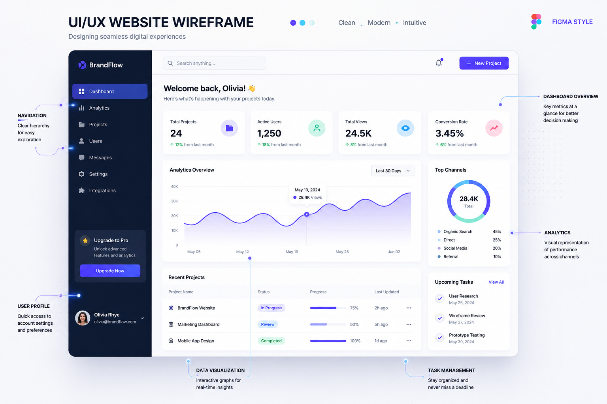

.png)

About
Inclusive user interface (UI) and user experience (UX) design ensure that digital products are accessible to everyone, regardless of visual, motor, or cognitive abilities. A well-structured layout goes beyond aesthetics; it prioritizes clear navigation, readable typography, and logical visual hierarchies. By implementing accessible design systems, creators can build web environments where every user can interact seamlessly without encountering frustrating digital barriers.
Policy
All digital assets must adhere to the Web Content Accessibility Guidelines (WCAG) standard. This policy requires strict compliance with color contrast ratios to ensure text remains legible against background elements. Furthermore, all interactive components—such as buttons and form fields—must support full keyboard navigation and include appropriate descriptive tags for screen readers. Designing with these foundational rules guarantees a universally functional interface.
Reports
| UI Component | WCAG Standard Tested | Audit Status |
|---|---|---|
| Primary Navigation Bar | 2.1.1 Keyboard Accessibility | Passed - Fully Navigable |
| Hero Banner Graphic | 1.1.1 Non-text Content (Alt Text) | Passed - Tags Applied |
| Submit Form Button | 1.4.3 Minimum Color Contrast | Review - Contrast Ratio Too Low |